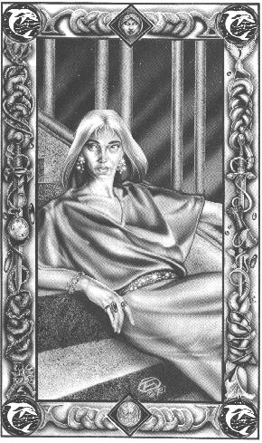

ЛьювиллаЖелтовато-зеленые глаза, зеленые волосы / кожа, типичный для Ребмы склад тела.Цвета одежды: серый и зеленый с бледно-лиловым. Живет в Ребме. Символ - дельфин на фоне воды. Тихая и спокойная, Льювилла, как и Кайн, успокаивающе влияла на события во время дней хаоса в конце Междуцарствия. Но в отличие от Кайна , она совершенно не заинтересована в делах двора, предпочитая уход в Отражения безжалостным интригам, что занимают ее братьев и сестер .Она до сих пор продолжает вести тот образ жизни и, кажется, страшно утомлена страстями двора. Почти все с вое время она проводит вне дома, в Отражении, где занимается искусством и танцами. |
 |